import os
import pandas as pd
import matplotlib.pyplot as plt
import geopandas as gpd
pd.set_option("display.max_columns", None)
# -------------------------------------
# Import states polygons
states = gpd.read_file(os.path.join('data',
'tl_2026_us_state',
'tl_2026_us_state.shp')
)
# Import Natural Earth populated places points
places = gpd.read_file(os.path.join('data',
'ne_50m_populated_places_simple',
'ne_50m_populated_places_simple.shp')
)
# Import roads lines
roads = gpd.read_file(os.path.join('data',
'ne_10m_roads',
'ne_10m_roads.shp')
)15 Clipping
In this lesson we will learn how to clip different geometries.
By the end of this lesson, students will be able to:
- reproject geo-dataframes so they share the same CRS before combining them
- clip a
geopandas.GeoDataFrameto the polygons of another one usinggeopandas.clip() - subset tabular data before applying geospatial operations
- clip a
geopandas.GeoDataFrameto a bounding box usingtotal_bounds - measure the length of lines in a projected CRS
- explain how clipping changes geometries but not attributes
- decide when to clip to a bounding box instead of the exact polygons
About the data
We will use three datasets in this lesson.
The first dataset is a TIGER shapefile of the US states from the United States Census Bureau [1]. TIGER stands for Topologically Integrated Geographic Encoding and Referencing. TIGER is the US Census Bureau’s geographic database, and TIGER/Line files are extracts from it. Earlier versions of these files used a plain-text (ASCII) format; beginning with the 2007 version, they are distributed as shapefiles. You can view the metadata for all the TIGER shapefiles here.
Follow these steps to download the shapefile with the United States’ states:
- At the 2026 TIGER page, under Download, click on “Web Interface”.
- For year, select 2026, and for layer type select “States (and equivalent)”. Click submit.
- Click on “Download national file”.
The column descriptions for the US states shapefile, from the TIGER/Line Shapefiles technical documentation, are:
| Column | Type | Description |
|---|---|---|
REGION |
String | Region code |
DIVISION |
String | Division code |
STATEFP |
String | State FIPS code |
STATENS |
String | State NS code |
GEOID |
String | State identifier; state FIPS code |
GEOIDFQ |
String | Fully qualified GEOID; used to join data tables from data.census.gov |
STUSPS |
String | Two-character United States Postal Service (USPS) state postal abbreviation |
NAME |
String | State name |
LSAD |
String | LSAD code for the state |
MTFCC |
String | MAF/TIGER Feature Class Code (G4000) |
FUNCSTAT |
String | Functional status |
ALAND |
Number | Land area |
AWATER |
Number | Water area |
INTPTLAT |
String | Latitude of the internal point |
INTPTLON |
String | Longitude of the internal point |
The second dataset we’ll use is Natural Earth’s simple medium scale populated places dataset [2]. We can obtain this dataset by downloading the shapefile (choose the one that says “simple (less columns)”).
The third dataset we’ll use is Natural Earth’s road dataset [3]. We can obtain this dataset by downloading the shapefile.
We will combine these datasets to create the following map of infrastructure in Alaska:
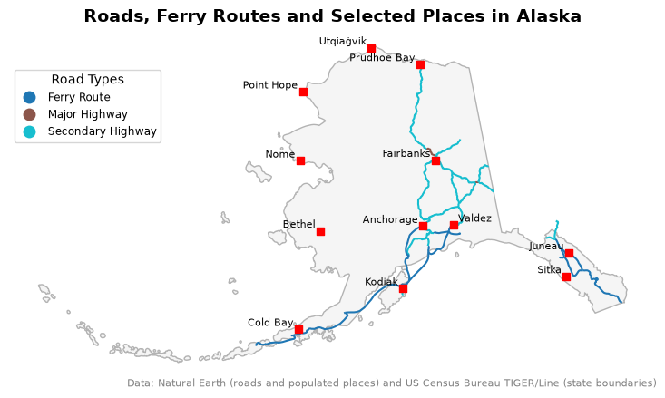
For these notes, all the data is inside a data/ directory at the same level as the notebook.
Import data
Let’s start by loading our libraries and then importing the datasets we will use.
Check-in
Use a for loop to iterate over the three geo-dataframes we imported and change their column names to lowercase.
Prepare Alaska multipolygon
Let’s take a look at our states geo-dataframe. Since this is a geospatial dataset, exploration should include at least checking the head of the dataset, plotting the data, and looking at its CRS.
print(f"CRS: {states.crs}")
states.head(3)CRS: EPSG:4269| region | division | statefp | statens | geoid | geoidfq | stusps | name | lsad | mtfcc | funcstat | aland | awater | intptlat | intptlon | geometry | |
|---|---|---|---|---|---|---|---|---|---|---|---|---|---|---|---|---|
| 0 | 1 | 2 | 36 | 01779796 | 36 | 0400000US36 | NY | New York | 00 | G4000 | A | 122049230845 | 19256680224 | +42.9133974 | -075.5962723 | MULTIPOLYGON (((-74.04075 40.70017, -74.04073 ... |
| 1 | 4 | 8 | 32 | 01779793 | 32 | 0400000US32 | NV | Nevada | 00 | G4000 | A | 284537080522 | 1839846018 | +39.3310928 | -116.6151469 | POLYGON ((-119.32418 41.99392, -119.32362 41.9... |
| 2 | 4 | 9 | 02 | 01785533 | 02 | 0400000US02 | AK | Alaska | 00 | G4000 | A | 1479942808337 | 244276695297 | +63.3469818 | -152.8385657 | MULTIPOLYGON (((-167.55823 60.22436, -167.5567... |
states.plot()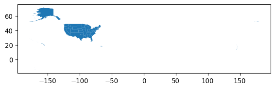
For this lesson, we are interested in plotting data only for Alaska, so let’s select this data:
alaska = states[states['name'] == 'Alaska']
alaska.plot()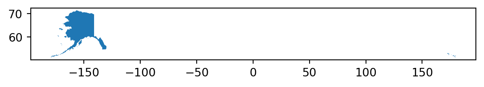
Notice that the way the Alaska multipolygon is plotted under the NAD83/EPSG:4269 CRS separates the islands and unnaturally elongates the map. This happens because the westernmost Aleutian Islands cross the 180° meridian (the antimeridian): their longitudes jump from -180° to about +172°, so they are drawn on the opposite side of the plot. To fix this, we will reproject the Alaska geo-dataframe to the EPSG:3338 CRS. This CRS is a projected CRS, better suited for working with data from Alaska:
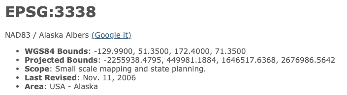
# Reproject to CRS optimized for Alaska
alaska = alaska.to_crs('epsg:3338')
# Inspect the new CRS
print('Is this CRS projected? ', alaska.crs.is_projected)
alaska.crsIs this CRS projected? True<Projected CRS: EPSG:3338>
Name: NAD83 / Alaska Albers
Axis Info [cartesian]:
- X[east]: Easting (metre)
- Y[north]: Northing (metre)
Area of Use:
- name: United States (USA) - Alaska.
- bounds: (172.42, 51.3, -129.99, 71.4)
Coordinate Operation:
- name: Alaska Albers (meter)
- method: Albers Equal Area
Datum: North American Datum 1983
- Ellipsoid: GRS 1980
- Prime Meridian: Greenwichalaska.plot()Prepare populated places points
Let’s now explore the populated places data.
print(f"CRS: {places.crs}")
places.head(3)CRS: EPSG:4326| scalerank | natscale | labelrank | featurecla | name | namepar | namealt | nameascii | adm0cap | capalt | capin | worldcity | megacity | sov0name | sov_a3 | adm0name | adm0_a3 | adm1name | iso_a2 | note | latitude | longitude | pop_max | pop_min | pop_other | rank_max | rank_min | meganame | ls_name | min_zoom | ne_id | geometry | |
|---|---|---|---|---|---|---|---|---|---|---|---|---|---|---|---|---|---|---|---|---|---|---|---|---|---|---|---|---|---|---|---|---|
| 0 | 10 | 1 | 5 | Admin-1 region capital | Bombo | None | None | Bombo | 0 | 0 | None | 0 | 0 | Uganda | UGA | Uganda | UGA | Bamunanika | UG | None | 0.583299 | 32.533300 | 75000 | 21000 | 0.0 | 8 | 7 | None | None | 7.0 | 1159113923 | POINT (32.53330 0.58330) |
| 1 | 10 | 1 | 5 | Admin-1 region capital | Fort Portal | None | None | Fort Portal | 0 | 0 | None | 0 | 0 | Uganda | UGA | Uganda | UGA | Kabarole | UG | None | 0.671004 | 30.275002 | 42670 | 42670 | 0.0 | 7 | 7 | None | None | 7.0 | 1159113959 | POINT (30.27500 0.67100) |
| 2 | 10 | 1 | 3 | Admin-1 region capital | Potenza | None | None | Potenza | 0 | 0 | None | 0 | 0 | Italy | ITA | Italy | ITA | Basilicata | IT | None | 40.642002 | 15.798997 | 69060 | 69060 | 0.0 | 8 | 8 | None | None | 7.0 | 1159117259 | POINT (15.79900 40.64200) |
places.plot()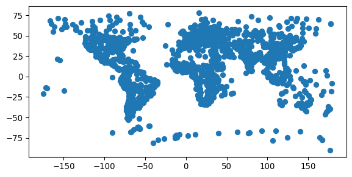
This dataset has the EPSG:4326 CRS. Remember this is the EPSG code for the WGS 84 CRS. This is not a surprise since the places data is global and EPSG:4326/WGS 84 is the most widely used CRS for such data.
Let’s see what happens when we try to plot this data on top of Alaska:
# Trouble
fig, ax = plt.subplots()
alaska.plot(ax=ax)
places.plot(ax=ax, color='red')
plt.show()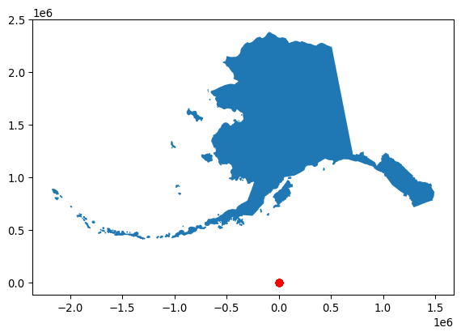
Data in weird places? Check your CRSs
This is a classic slip in geospatial analysis. To plot, analyze, or integrate different geospatial datasets they must have the same CRS.
Here, alaska and places have different CRSs, leading to unexpected results when plotting them together:
alaska.crs == places.crsFalse
Check-in
Reproject the places geo-dataframe into alaska’s CRS and verify the CRSs match using assert.
Let’s check that map again:
fig, ax = plt.subplots()
alaska.plot(ax=ax)
places.plot(ax=ax, color='red', markersize=2)
plt.show()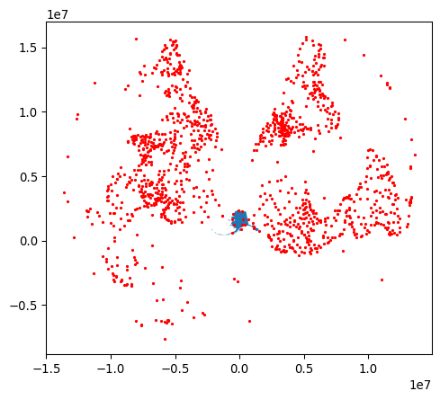
This is better: we can see the Alaska polygons and some of the places points on top of it. But why does the rest of the world look so strange? Every CRS is designed for an area of use (look for “Area of Use” in the output of alaska.crs above). EPSG:3338 is accurate around Alaska, so points far from Alaska get heavily distorted. We don’t need them anyway: next, we’ll keep only the points inside Alaska.
Clipping
Clipping means using a polygon (or polygons) to keep only the parts of the geometries that fall inside them. Clipping a geopandas.GeoDataFrame is simple using the geopandas clip() function. The general syntax is:
updated_geodf = geopandas.clip(geodf, mask)where:
updated_geodfis the output of the function: the intersection of the geometries ingeodfwithmask,geodfis thegeopandas.GeoDataFramewe want to clip,maskis ageopandas.GeoDataFramewith the polygon(s) we want to use for clipping (we will see later that it can also be a bounding box). Thismaskmust be in the same CRS asgeodf!
In our case:
# Clip populated places to Alaska multipolygon
ak_places = gpd.clip(places, alaska)
fig, ax = plt.subplots()
alaska.plot(ax=ax)
ak_places.plot(ax=ax, color='red')
plt.show()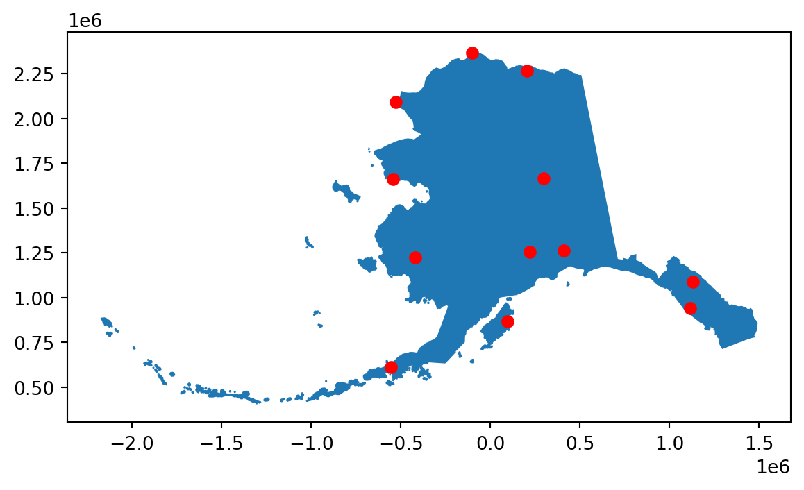
Prepare roads
Now we move on to our roads dataset.
print(roads.crs)
roads.head(3)EPSG:4326| scalerank | featurecla | type | sov_a3 | note | edited | name | namealt | namealtt | routeraw | question | length_km | toll | ne_part | label | label2 | local | localtype | localalt | labelrank | ignore | add | rwdb_rd_id | orig_fid | prefix | uident | continent | expressway | level | min_zoom | min_label | geometry | |
|---|---|---|---|---|---|---|---|---|---|---|---|---|---|---|---|---|---|---|---|---|---|---|---|---|---|---|---|---|---|---|---|---|
| 0 | 8 | Road | Secondary Highway | CAN | None | Version 1.5: Changed alignment, a few adds in ... | None | None | None | None | 0 | 3 | 0 | ne_1d4_original | None | None | None | None | None | 0 | 0 | 0 | 0 | 0 | None | 314705 | North America | 0 | None | 7.1 | 9.6 | LINESTRING (-133.32533 62.21571, -133.31664 62... |
| 1 | 7 | Road | Secondary Highway | USA | None | Version 1.5: Changed alignment, a few adds in ... | 83 | None | None | None | 0 | 164 | 0 | ne_1d4_original | None | None | None | None | None | 0 | 0 | 0 | 0 | 0 | None | 108105 | North America | 0 | Federal | 7.0 | 8.6 | LINESTRING (-100.50543 42.80753, -100.53495 42... |
| 2 | 7 | Road | Secondary Highway | USA | None | Version 1.5: Changed alignment, a few adds in ... | 840 | None | None | None | 0 | 98 | 0 | ne_1d4_original | None | None | None | None | None | 0 | 0 | 0 | 0 | 0 | None | 0 | North America | 0 | U/C | 7.0 | 9.5 | LINESTRING (-87.27432 36.02439, -87.22916 35.9... |
roads.plot()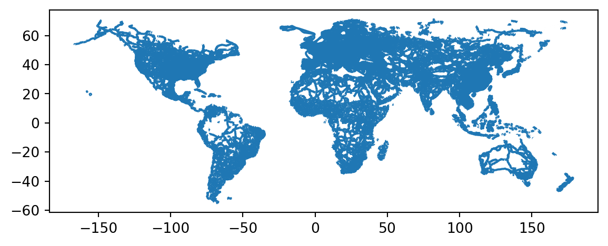
You may have already noticed that the roads data is not in the same CRS as the alaska polygons, so these geo-datasets shouldn’t interact until they’re in the same CRS. Before jumping right into reprojecting and clipping, we will subset the data to select only US roads:
usa_roads = roads[roads['sov_a3'] == 'USA']
usa_roads.plot()
Reduce your tabular data before reducing via geometries
Geospatial operations are usually costly in terms of computing power. The more detailed our geometries are, the longer it takes to do geospatial computations. It’s a good practice to reduce your data as much as possible before applying any geospatial transformation.
We will now compose functions to clip usa_roads using the alaska multipolygon. Notice we are using the output of usa_roads.to_crs(alaska.crs) directly and thus not changing the usa_roads geo-dataframe or creating new variables:
# Clip usa_roads to alaska geometry
ak_roads = gpd.clip(usa_roads.to_crs(alaska.crs), alaska)
fig, ax = plt.subplots()
alaska.plot(ax=ax)
ak_roads.plot(ax=ax, color='red')
plt.show()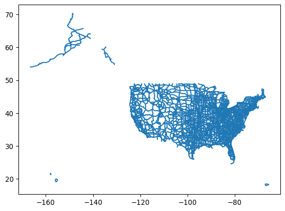
Notice the short, disconnected segments in the southwest? Many of these “roads” are ferry routes that run over water. Clipping to the alaska polygons keeps only the pieces that cross land, so clipping exactly to the polygons isn’t what we want here.
Clipping with a bounding box
We will clip the usa_roads geo-dataframe with the bounding box of alaska instead of its polygons. A bounding box is the smallest rectangle that contains all the geometries. It is defined by four coordinates, minx, miny, maxx, maxy:
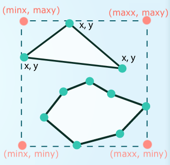
Remember that the total_bounds attribute of a geo-dataframe gives us these four values:
alaska.total_boundsarray([-2175729.73162241, 404545.10791528, 1493082.30904445,
2383808.43520815])gpd.clip() accepts these four values directly as the mask, so we can clip the roads to Alaska’s bounding box in one step:
ak_complete_roads = gpd.clip(usa_roads.to_crs(alaska.crs), alaska.total_bounds)The bounds are just four numbers in the units of alaska’s CRS (meters, for EPSG:3338). They don’t carry any CRS information, so it is up to us to make sure the data we clip is in the same CRS. Here, we do this by reprojecting usa_roads to alaska.crs before clipping.
Notice the difference between the two clipping methods:
fig, (ax1, ax2) = plt.subplots(2, 1, figsize=(10,10))
ak_roads.plot(ax=ax1)
ax1.set_title('Roads clipped with AK multipolygon')
ak_complete_roads.plot(ax=ax2)
ax2.set_title('Roads clipped with AK bounding box')
plt.show()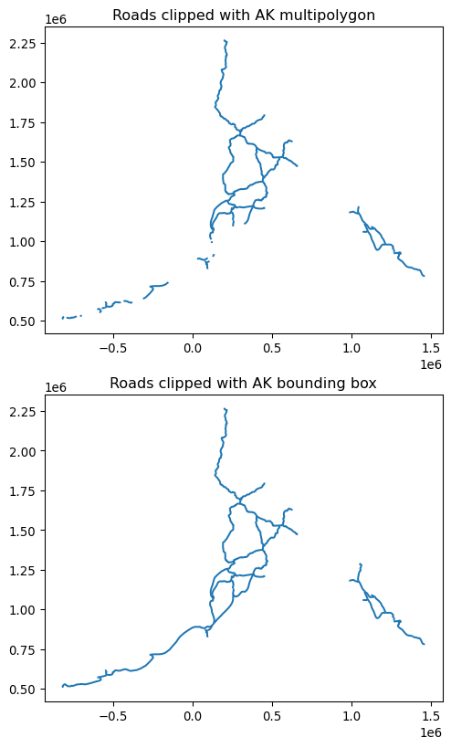
Measuring lengths
To understand the difference between the two clips, we will compare the lengths of their roads. Geo-dataframes have a length attribute that calculates the length of each line from its geometry, in the units of the CRS. Let’s try it on one road in Alaska, the road with index 1138:
usa_roads.loc[[1138]].length/var/folders/4y/svv5420s5y32zxkvwtd0qplr0000gq/T/ipykernel_36778/3731596667.py:1: UserWarning: Geometry is in a geographic CRS. Results from 'length' are likely incorrect. Use 'GeoSeries.to_crs()' to re-project geometries to a projected CRS before this operation.
usa_roads.loc[[1138]].length1138 4.051932
dtype: float64geopandas gives us a warning, and the result is not a length we can use. usa_roads is in EPSG:4326, a geographic CRS whose units are degrees. A degree is not a fixed distance: one degree of longitude is about 111 km at the equator but only about 55 km in southern Alaska.
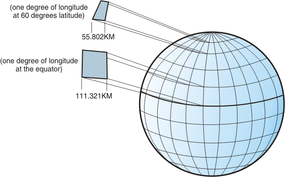
To measure lengths, we first need to reproject to a projected CRS whose units are meters. Let’s use the EPSG:3338 CRS for Alaska:
# Reproject to the Alaska CRS and convert meters to kilometers
usa_roads.loc[[1138]].to_crs('epsg:3338').length / 10001138 287.473411
dtype: float64The road is about 287 km long. Every projection distorts some lengths, but a projected CRS designed for our region, like EPSG:3338 for Alaska, can keep that distortion small.
How does clipping affect the data?
Let’s go back to the two clipped geo-dataframes, ak_roads and ak_complete_roads. How does the difference we saw in the plots show up in the geo-dataframes themselves? Let’s compare their number of rows and the total length of their roads. As we saw, both are in EPSG:3338, so the length attribute gives the length of each line in meters:
print('Number of roads (polygon clip):', len(ak_roads))
print('Number of roads (bbox clip): ', len(ak_complete_roads))
# Divide by 1000 to convert meters to kilometers
print('Total length in km (polygon clip):', round(ak_roads.length.sum() / 1000))
print('Total length in km (bbox clip): ', round(ak_complete_roads.length.sum() / 1000))Number of roads (polygon clip): 56
Number of roads (bbox clip): 56
Total length in km (polygon clip): 6069
Total length in km (bbox clip): 7111Both geo-dataframes have the same number of rows: clipping to the polygons did not drop any road. Instead, gpd.clip() cut the roads that cross the coastline, so the polygon clip has about 1,000 fewer kilometers of roads. The difference is in the geometries, not in the number of rows.
Let’s zoom in on road 1138, the route we measured earlier, to see what happened. It’s a ferry route in the eastern Aleutian Islands. Let’s plot it from each clipped geo-dataframe:
fig, (ax1, ax2) = plt.subplots(2, 1)
ak_roads.loc[[1138]].plot(ax=ax1)
ax1.set_title('Road 1138 clipped with AK multipolygon')
ak_complete_roads.loc[[1138]].plot(ax=ax2)
ax2.set_title('Road 1138 clipped with AK bounding box')
plt.show()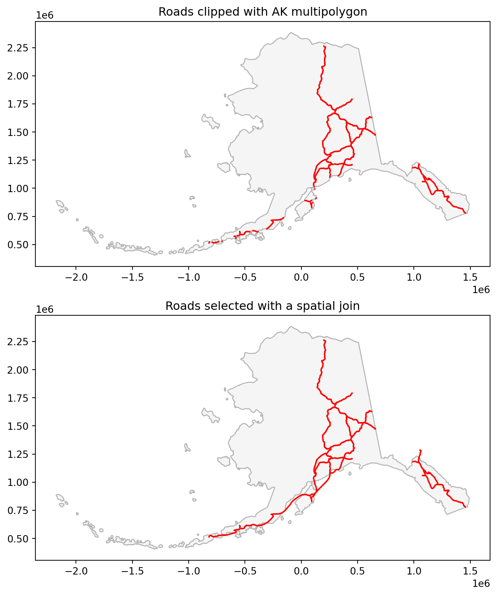
The polygon clip kept only the pieces of the ferry route that cross the islands and removed the parts over water. The bounding box clip kept the whole route, because all of it is inside Alaska’s bounding box. Let’s compare the length and geometry type of road 1138 in each geo-dataframe:
print('Length in km (polygon clip):', round(ak_roads.length[1138] / 1000, 1))
print('Length in km (bbox clip): ', round(ak_complete_roads.length[1138] / 1000, 1))
print('Geometry type (polygon clip):', ak_roads.geom_type[1138])
print('Geometry type (bbox clip): ', ak_complete_roads.geom_type[1138])Length in km (polygon clip): 131.6
Length in km (bbox clip): 287.5
Geometry type (polygon clip): MultiLineString
Geometry type (bbox clip): LineStringThe polygon clip kept only about 132 of the route’s 287 km. It also changed the geometry type: the route crosses the coastline several times, so the polygon clip cut it into several pieces and turned the LineString into a MultiLineString.
What about the other columns? gpd.clip() only changes the geometries: all the other columns are copied unchanged from the original geo-dataframe.
ak_roads.loc[[1138]]| scalerank | featurecla | type | sov_a3 | note | edited | name | namealt | namealtt | routeraw | question | length_km | toll | ne_part | label | label2 | local | localtype | localalt | labelrank | ignore | add | rwdb_rd_id | orig_fid | prefix | uident | continent | expressway | level | min_zoom | min_label | geometry | |
|---|---|---|---|---|---|---|---|---|---|---|---|---|---|---|---|---|---|---|---|---|---|---|---|---|---|---|---|---|---|---|---|---|
| 1138 | 7 | Ferry | Ferry Route | USA | None | New in version 2.0.0 | None | None | None | None | 0 | 435 | 0 | ne_1d4_original | None | None | None | None | None | 0 | 0 | 0 | 0 | 0 | None | 4305 | North America | 0 | Ferry | 7.0 | 9.5 | MULTILINESTRING ((-587641.011 573877.088, -582... |
ak_complete_roads.loc[[1138]]| scalerank | featurecla | type | sov_a3 | note | edited | name | namealt | namealtt | routeraw | question | length_km | toll | ne_part | label | label2 | local | localtype | localalt | labelrank | ignore | add | rwdb_rd_id | orig_fid | prefix | uident | continent | expressway | level | min_zoom | min_label | geometry | |
|---|---|---|---|---|---|---|---|---|---|---|---|---|---|---|---|---|---|---|---|---|---|---|---|---|---|---|---|---|---|---|---|---|
| 1138 | 7 | Ferry | Ferry Route | USA | None | New in version 2.0.0 | None | None | None | None | 0 | 435 | 0 | ne_1d4_original | None | None | None | None | None | 0 | 0 | 0 | 0 | 0 | None | 4305 | North America | 0 | Ferry | 7.0 | 9.5 | LINESTRING (-587641.011 573877.088, -582019.27... |
This means attributes that depend on the geometry, like the length_km column in our roads data, still describe the original, uncut features. If we need them for the clipped data, we have to recalculate them from the new geometries. Heads up: length_km was stored by Natural Earth and doesn’t always match the geometries even before clipping (for road 1138 it says 435 km, but we measured about 287 km), so it’s good practice to check stored attributes against the data.
Plot and exercises
Finally, we can put all our data together in the same map:
Code
fig, ax = plt.subplots(figsize=(11,5))
ax.axis('off')
alaska.plot(ax=ax, color='whitesmoke', edgecolor='0.7')
ak_complete_roads.plot(ax=ax,
zorder=1, # Specify layer plotting order
column='type',
legend=True,
legend_kwds={'title': "Road Types",
'loc': 'upper left',
'bbox_to_anchor':(0,0.9),
'fontsize':'small'}
)
ak_places.plot(ax=ax,
zorder=2, # Specify layer plotting order
color='red',
marker='s' # Square marker
)
# Add city names as text annotations
for x, y, name in zip(ak_places.geometry.x, ak_places.geometry.y, ak_places['name']):
ax.text(x-30000, y+20000, name, fontsize=8, ha='right')
ax.set_title("Roads, Ferry Routes and Selected Places in Alaska", fontsize=14, fontweight='bold')
# Add data sources below the map
ax.annotate("Data: Natural Earth (roads and populated places) and US Census Bureau TIGER/Line (state boundaries)",
xy=(1, 0), xycoords='axes fraction', # Bottom-right corner of the axes
ha='right', va='top', fontsize=8, color='gray')
plt.show()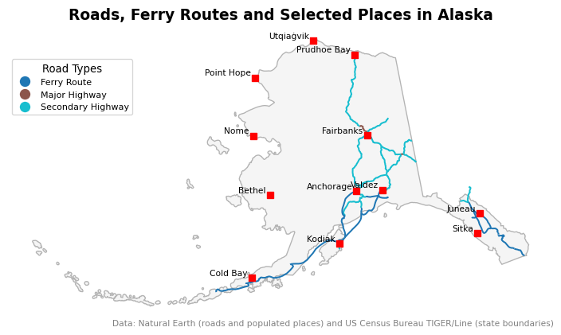
Exercise 1
Notice the overlapping labels for Anchorage and Valdez:
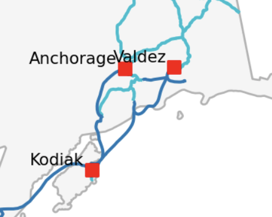
Update the map so these labels do not overlap. One way to do it is using an if when iterating over the Alaska populated places. Remember that the map is in the EPSG:3338 CRS, whose units are meters, so the label offsets (like x-30000) are in meters too.
Exercise 2
Look closely at southeast Alaska. A short road goes past the Alaska border into Canada. Why is this road on our map of Alaska? How could you update the map so it only shows roads inside Alaska but still includes the ferry routes?
References
[1]
U.S. Census Bureau, “TIGER/Line Shapefiles: States (2026).” U.S. Census Bureau, 2026. Available: https://www.census.gov/geographies/mapping-files/time-series/geo/tiger-line-file.2026.html. [Accessed: Oct. 24, 2026]
[2]
Natural Earth, “Populated Places (simple), 1:50m Cultural Vectors.” Dataset, version 5.1.2, 2022. Available: https://www.naturalearthdata.com/downloads/50m-cultural-vectors/
[3]
Natural Earth, “Roads, 1:10m Cultural Vectors.” Dataset, version 5.0.0, 2021. Available: https://www.naturalearthdata.com/downloads/10m-cultural-vectors/roads/